A short description of the post.
O banco de dados Boston apresenta registros de valores medianos das casas (medv) de 506 bairros de Boston. O objetivo é identificar quais das 13 variáveis explicativas estão associadas com esses valores e usá-las para fazer predições de preços das casas.
glimpse(Boston)
Rows: 506
Columns: 14
$ crim <dbl> 0.00632, 0.02731, 0.02729, 0.03237, 0.06905, 0.0298…
$ zn <dbl> 18.0, 0.0, 0.0, 0.0, 0.0, 0.0, 12.5, 12.5, 12.5, 12…
$ indus <dbl> 2.31, 7.07, 7.07, 2.18, 2.18, 2.18, 7.87, 7.87, 7.8…
$ chas <int> 0, 0, 0, 0, 0, 0, 0, 0, 0, 0, 0, 0, 0, 0, 0, 0, 0, …
$ nox <dbl> 0.538, 0.469, 0.469, 0.458, 0.458, 0.458, 0.524, 0.…
$ rm <dbl> 6.575, 6.421, 7.185, 6.998, 7.147, 6.430, 6.012, 6.…
$ age <dbl> 65.2, 78.9, 61.1, 45.8, 54.2, 58.7, 66.6, 96.1, 100…
$ dis <dbl> 4.0900, 4.9671, 4.9671, 6.0622, 6.0622, 6.0622, 5.5…
$ rad <int> 1, 2, 2, 3, 3, 3, 5, 5, 5, 5, 5, 5, 5, 4, 4, 4, 4, …
$ tax <dbl> 296, 242, 242, 222, 222, 222, 311, 311, 311, 311, 3…
$ ptratio <dbl> 15.3, 17.8, 17.8, 18.7, 18.7, 18.7, 15.2, 15.2, 15.…
$ black <dbl> 396.90, 396.90, 392.83, 394.63, 396.90, 394.12, 395…
$ lstat <dbl> 4.98, 9.14, 4.03, 2.94, 5.33, 5.21, 12.43, 19.15, 2…
$ medv <dbl> 24.0, 21.6, 34.7, 33.4, 36.2, 28.7, 22.9, 27.1, 16.…# Descrição das variáveis
help(Boston)
Faça um gráfico de dispersão entre medv e rm.
Boston %>%
ggplot() +
geom_point(aes(x = rm, y = medv)) +
labs(x = 'Número médio de quartos por habitação', y = 'Preço mediano das habitações do bairro (em 1000 dólares)')
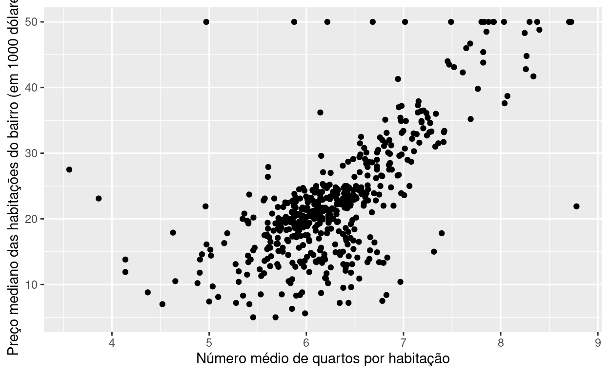
Ajuste um modelo de regressão linear simples utilizando medv como resposta e rm como explicativa e guarde em objeto chamado mod_simples. Consulte o summary(mod_simples) em seguida.
Call:
lm(formula = medv ~ rm, data = Boston)
Residuals:
Min 1Q Median 3Q Max
-23.346 -2.547 0.090 2.986 39.433
Coefficients:
Estimate Std. Error t value Pr(>|t|)
(Intercept) -34.671 2.650 -13.08 <2e-16 ***
rm 9.102 0.419 21.72 <2e-16 ***
---
Signif. codes: 0 '***' 0.001 '**' 0.01 '*' 0.05 '.' 0.1 ' ' 1
Residual standard error: 6.616 on 504 degrees of freedom
Multiple R-squared: 0.4835, Adjusted R-squared: 0.4825
F-statistic: 471.8 on 1 and 504 DF, p-value: < 2.2e-16Sabendo que medv é o preço mediano das habitações do bairro e o rm é o número médio de quartos por habitação,
(Intercept).\(\blacktriangleright\) Resposta: Nesse caso, -34.671 \(\times\) 1000 dólares é a média do preço mediano das habitações quando temos zero quartos por habitação.
rm.\(\blacktriangleright\) Resposta: A cada um quarto por habitação que aumentamos por habitação, temos um acréscimo de 9.102 \(\times\) 1000 dólares na média do preço mediano das habitações.
\(\blacktriangleright\) Resposta: Sim, pois ao nível de significância de 5%, rejeitamos a hipótese nula (\(H_0: \beta_1=0\)), uma vez que o \(p\)-valor é menor do que 0,001. Dessa forma, temos evidências de que o preço mediano das habitações tem alguma relação com o número médio de quartos por habitação.
Consulte as saídas das funções
coef(mod_simples): mostra apenas as estimativas dos coeficientes de regressão.
confint(mod_simples): mostra o intervalo de 95% de confiança das estimativas dos coeficientes de regressão.
predict(mod_simples): calcula os valores preditos do preço mediano das habitações, isto é, \(\hat{\mbox{medv}}=-34,671+9,102 rm\).
predict(mod_simples, interval = "confidence"): calcula os valores preditos do preço mediano das habitações e o intervalo de 95% de confiança de cada valor predito.
augment(mod_simples): cria um data frame com valores de medv, rm, valores preditos, resíduo e distância de Cook.
coef(mod_simples)
(Intercept) rm
-34.670621 9.102109 confint(mod_simples)
2.5 % 97.5 %
(Intercept) -39.876641 -29.464601
rm 8.278855 9.925363 1 2 3 4 5 6 7
25.17575 23.77402 30.72803 29.02594 30.38215 23.85594 20.05126
8 9 10
21.50760 16.58335 19.97844 fit lwr upr
1 25.17575 24.55039 25.80110
2 23.77402 23.18536 24.36269
3 30.72803 29.78817 31.66790
4 29.02594 28.20203 29.84984
5 30.38215 29.46676 31.29755
6 23.85594 23.26582 24.44606
7 20.05126 19.43134 20.67118
8 21.50760 20.92234 22.09285
9 16.58335 15.79375 17.37296
10 19.97844 19.35611 20.60078augment(mod_simples)
# A tibble: 506 x 8
medv rm .fitted .resid .std.resid .hat .sigma .cooksd
<dbl> <dbl> <dbl> <dbl> <dbl> <dbl> <dbl> <dbl>
1 24 6.58 25.2 -1.18 -0.178 0.00231 6.62 0.0000367
2 21.6 6.42 23.8 -2.17 -0.329 0.00205 6.62 0.000111
3 34.7 7.18 30.7 3.97 0.602 0.00523 6.62 0.000952
4 33.4 7.00 29.0 4.37 0.662 0.00402 6.62 0.000885
5 36.2 7.15 30.4 5.82 0.882 0.00496 6.62 0.00194
6 28.7 6.43 23.9 4.84 0.733 0.00206 6.62 0.000555
7 22.9 6.01 20.1 2.85 0.431 0.00227 6.62 0.000212
8 27.1 6.17 21.5 5.59 0.846 0.00203 6.62 0.000727
9 16.5 5.63 16.6 -0.0834 -0.0126 0.00369 6.62 0.000000295
10 18.9 6.00 20.0 -1.08 -0.163 0.00229 6.62 0.0000306
# … with 496 more rowsUsando o data.frame gerado por augment(mod_simples) faça um gráfico de medv versus rm e em seguida desenhe a reta ajustada do mod_simples.
boston_pred <- augment(mod_simples)
boston_pred %>%
ggplot() +
geom_point(aes(x = rm, y = medv)) +
geom_line(aes(x = rm, y = .fitted), color="red") +
labs(x = 'Número médio de quartos por habitação', y = 'Preço mediano das habitações do bairro (em 1000 dólares)')
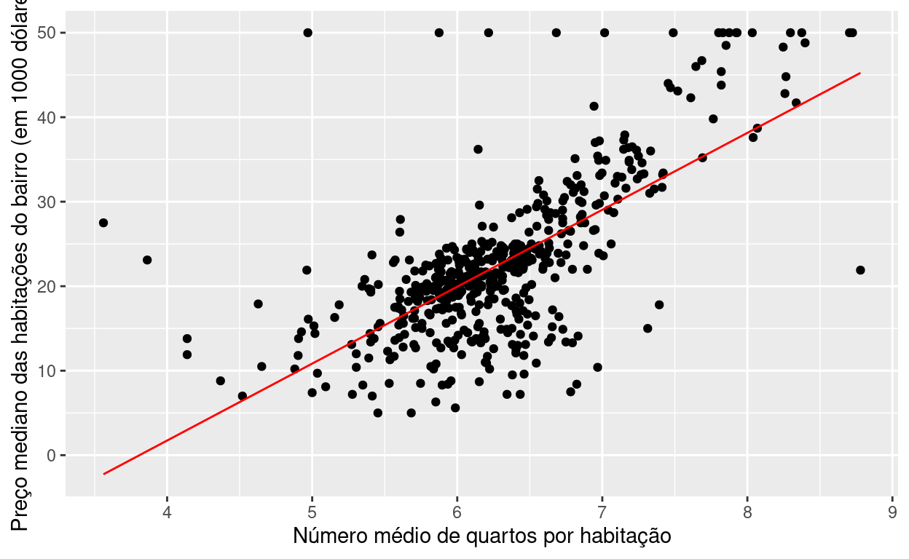
Faça um gráfico de resíduos. Coloque os resíduos no eixo Y e os valores ajustados no eixo X.
boston_pred %>%
ggplot() +
geom_point(aes(x = .fitted, y = .std.resid)) +
geom_hline(yintercept=0, linetype="dashed") +
labs(x = 'Valores ajustados', y = 'Resíduos')
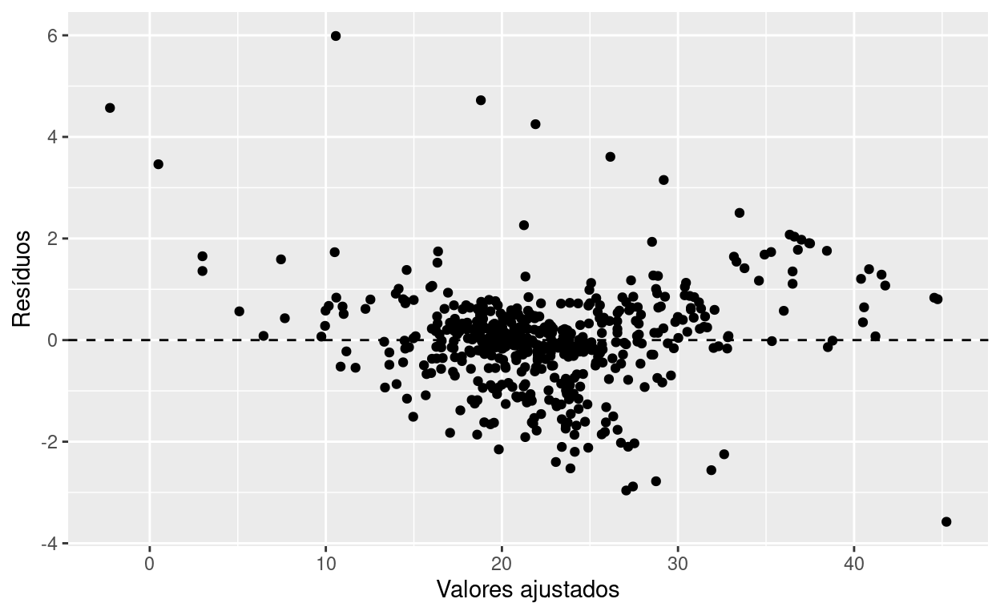
Observe os gráficos de plot(mod_simples).
plot(mod_simples)
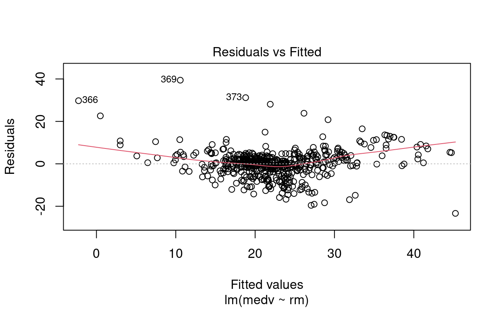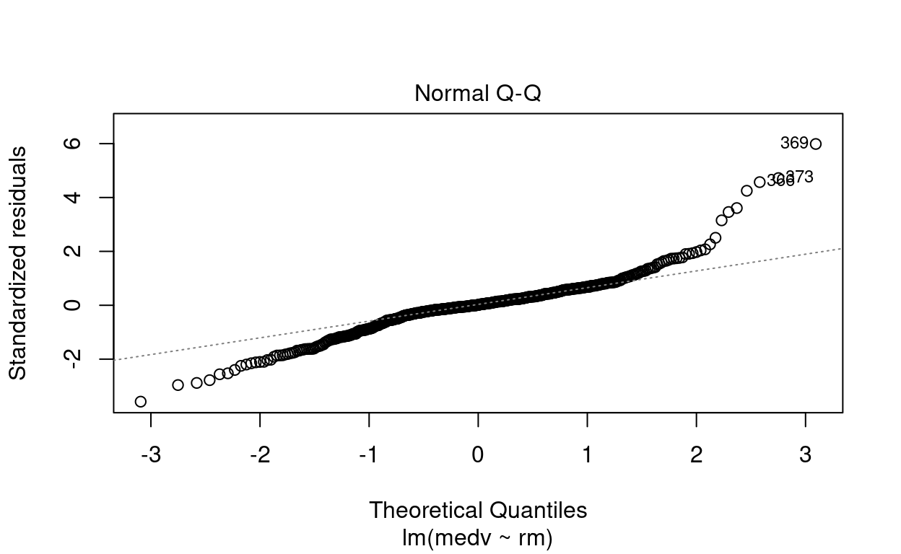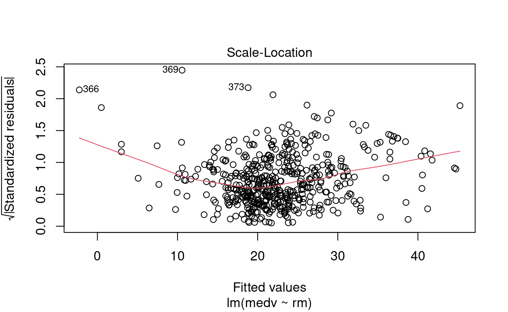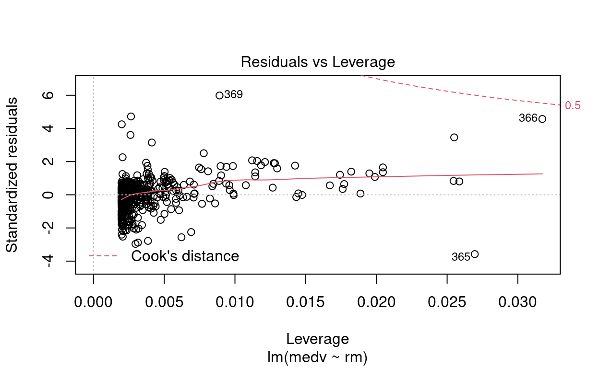
Apenas pela inspeção visual, responda: existem outliers? Eles são pontos de alavanca?
\(\blacktriangleright\) Resposta: Por meio das figuras, observamos que os pontos \(\sharp366\), \(\sharp369\) e \(\sharp373\) são possíveis outliers. O gráfico de Residuals vs Leverage indica que não são pontos de alavanca.
Ajuste um modelo mod_multiplo para medv explicado por rm e crim. Consulte o summary(mod_multiplo) em seguida.
Call:
lm(formula = medv ~ rm + crim, data = Boston)
Residuals:
Min 1Q Median 3Q Max
-21.608 -2.835 -0.380 2.592 38.839
Coefficients:
Estimate Std. Error t value Pr(>|t|)
(Intercept) -29.24472 2.58809 -11.300 <2e-16 ***
rm 8.39107 0.40485 20.726 <2e-16 ***
crim -0.26491 0.03307 -8.011 8e-15 ***
---
Signif. codes: 0 '***' 0.001 '**' 0.01 '*' 0.05 '.' 0.1 ' ' 1
Residual standard error: 6.237 on 503 degrees of freedom
Multiple R-squared: 0.542, Adjusted R-squared: 0.5401
F-statistic: 297.6 on 2 and 503 DF, p-value: < 2.2e-16Qual modelo ficou melhor: mod_simples ou mod_multiplo? Qual critério você utilizou para decidir o melhor?
\(\blacktriangleright\) Resposta: O mod_multiplo parece ser melhor do que o mod_simples, porque, considerando o R2 ajustado, o R2 ajustado do mod_multiplo (0,5401) é maior do que o R2 ajustado do mod_simples (0,4825). Além disso, a variável crim é significativa (\(p\)-valor < 0,001) para explicar a variablidade presente na média do preço mediano das habitações, considerando um nível de significância de 5%.
Por outro lado, pelos resíduos, ambos os modelos tem problemas com em relação a normalidade dos resíduos e com uma possível relação não linear entre a variável resposta e as variáveis explicativas. O que indica que o modelo mod_multiplo pode ser melhorado.
# Resíduo modelo múltiplo
plot(mod_multiplo)
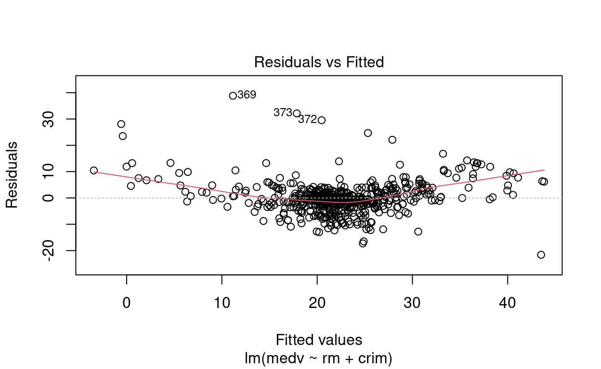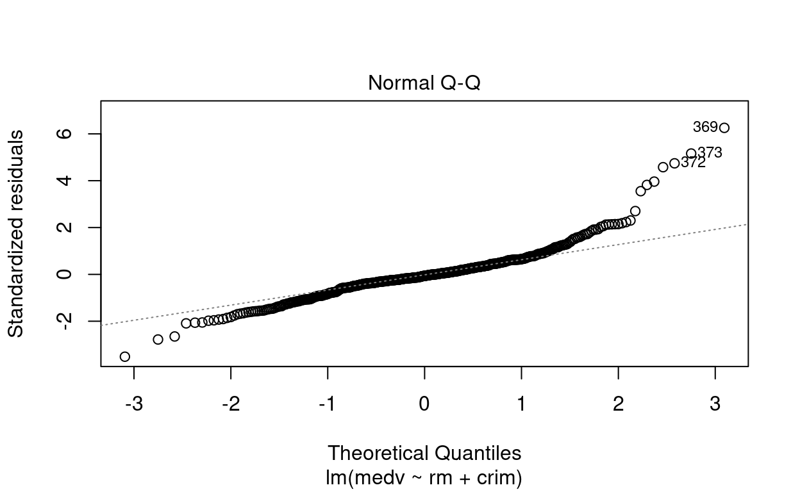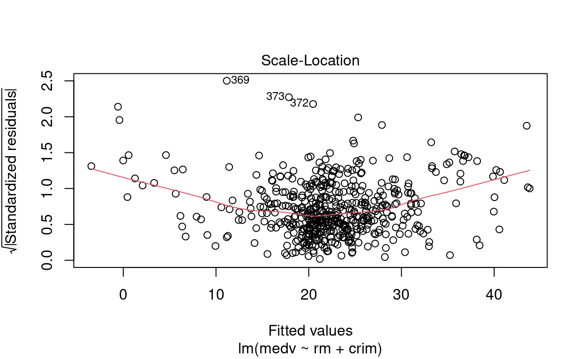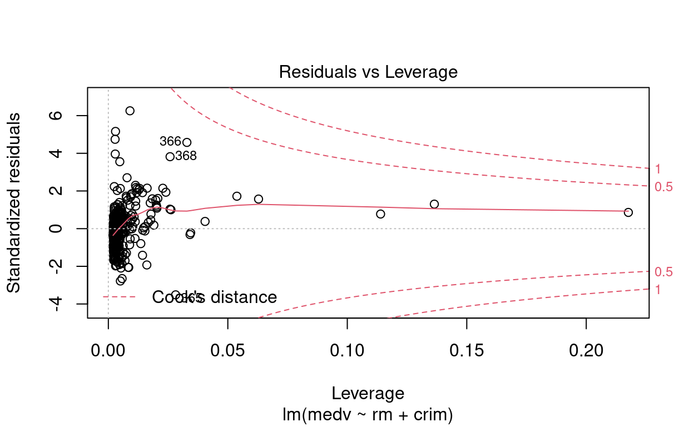
Ajuste um modelo mod_completo para medv explicado por todas as demais colunas. DICA: na fórmula medv ~ ., o ponto significa “todas as variáveis, tirando medv”.
summary(mod_completo) em seguida.
Call:
lm(formula = medv ~ ., data = Boston)
Residuals:
Min 1Q Median 3Q Max
-15.595 -2.730 -0.518 1.777 26.199
Coefficients:
Estimate Std. Error t value Pr(>|t|)
(Intercept) 3.646e+01 5.103e+00 7.144 3.28e-12 ***
crim -1.080e-01 3.286e-02 -3.287 0.001087 **
zn 4.642e-02 1.373e-02 3.382 0.000778 ***
indus 2.056e-02 6.150e-02 0.334 0.738288
chas 2.687e+00 8.616e-01 3.118 0.001925 **
nox -1.777e+01 3.820e+00 -4.651 4.25e-06 ***
rm 3.810e+00 4.179e-01 9.116 < 2e-16 ***
age 6.922e-04 1.321e-02 0.052 0.958229
dis -1.476e+00 1.995e-01 -7.398 6.01e-13 ***
rad 3.060e-01 6.635e-02 4.613 5.07e-06 ***
tax -1.233e-02 3.760e-03 -3.280 0.001112 **
ptratio -9.527e-01 1.308e-01 -7.283 1.31e-12 ***
black 9.312e-03 2.686e-03 3.467 0.000573 ***
lstat -5.248e-01 5.072e-02 -10.347 < 2e-16 ***
---
Signif. codes: 0 '***' 0.001 '**' 0.01 '*' 0.05 '.' 0.1 ' ' 1
Residual standard error: 4.745 on 492 degrees of freedom
Multiple R-squared: 0.7406, Adjusted R-squared: 0.7338
F-statistic: 108.1 on 13 and 492 DF, p-value: < 2.2e-16mod_simples, mod_multiplo ou mod_completo?\(\blacktriangleright\) Resposta: Novamente considerando o R2 ajustado, o modelo mais adequado entre os três modelos é o mod_completo, pois tem o R2 ajustado é igual a 0,7338; que é maior do que o R2 ajustados dos demais modelos. Além disso, as variáveis explicativas, exceto indus e age, foram signifitivas ao nível de significância de 5%.
Em relação aos resíduos, o modelo completo tem o mesmo problema dos outros dois modelos. Nesse caso, o modelo completo também pode ser melhorado.
# Resíduo modelo completo
plot(mod_completo)
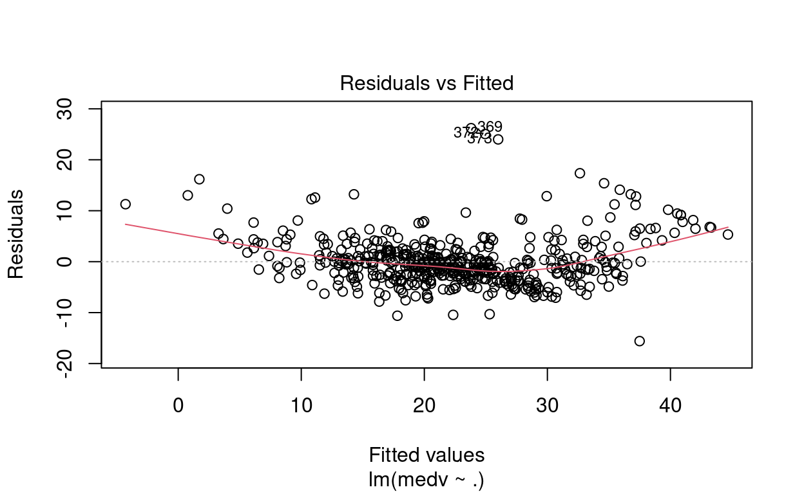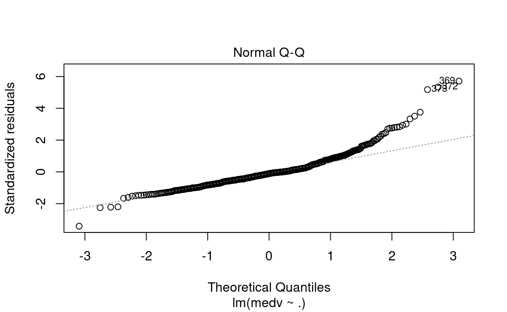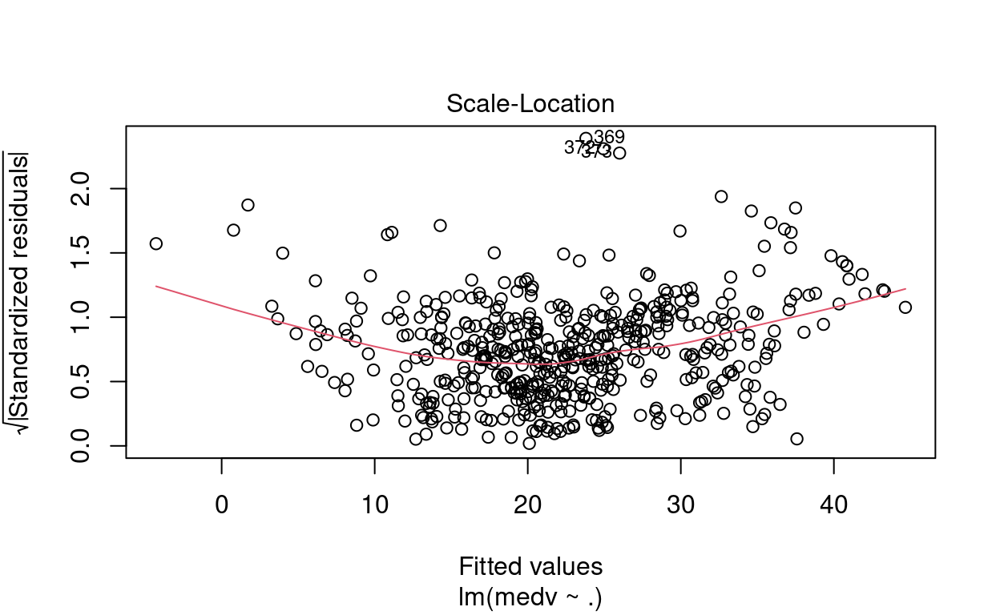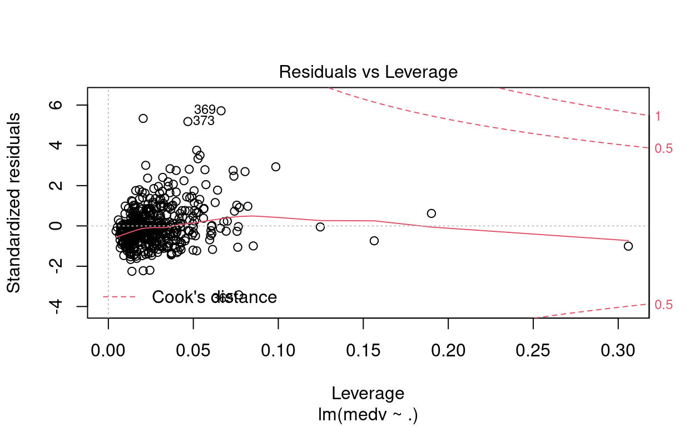
rm variou entre os três modelos? Por qual razão você acha que isso aconteceu?\(\blacktriangleright\) Resposta: Sim, a estimativa para o termo rm variou devido a inclusão de variáveis de explicativas no modelo.